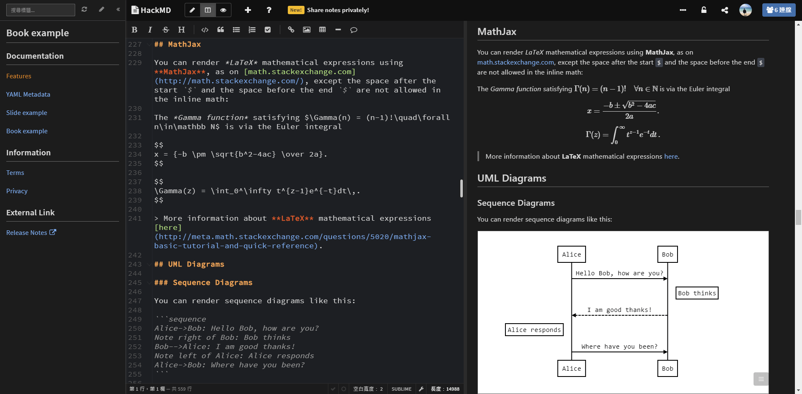
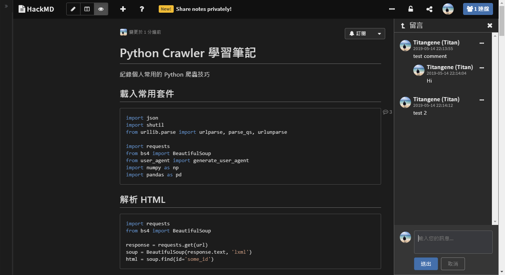

<!DOCTYPE html><html><head><meta name="generator" content="Hexo 3.8.0"><meta charset="utf-8"><title>套用自訂 HackMD 暗主題 | Titangene Blog</title><meta name="description" content="利用 blog 紀錄學習歷程"><meta http-equiv="X-UA-Compatible" content="IE=edge"><meta name="viewport" content="width=device-width,initial-scale=1,maximum-scale=1"><meta name="HandheldFriendly" content="True"><meta name="apple-mobile-web-app-capable" content="yes"><meta name="author" content="Titangene"><link rel="shortcut icon" href="/favicon.ico"><link rel="alternate" href="/atom.xml" title="Titangene Blog"><meta name="description" content="HackMD 是我常用的寫作平台，因官方沒有提供暗主題的瀏覽模式，所以我就刻了自訂的暗主題，也將自訂主題開源在 GitHub，歡迎大家發 PR 給我，並記得幫我按個 ⭐️ 星。"><meta name="keywords" content="Markdown,Dark Theme"><meta property="og:type" content="article"><meta property="og:title" content="套用自訂 HackMD 暗主題"><meta property="og:url" content="https://titangene.github.io/article/hackmd-dark-theme.html"><meta property="og:site_name" content="Titangene Blog"><meta property="og:description" content="HackMD 是我常用的寫作平台，因官方沒有提供暗主題的瀏覽模式，所以我就刻了自訂的暗主題，也將自訂主題開源在 GitHub，歡迎大家發 PR 給我，並記得幫我按個 ⭐️ 星。"><meta property="og:locale" content="zh-tw"><meta property="og:image" content="https://titangene.github.io/images/cover/hackmd-dark-theme.jpg"><meta property="og:updated_time" content="2019-05-19T16:02:51.484Z"><meta name="twitter:card" content="summary_large_image"><meta name="twitter:title" content="套用自訂 HackMD 暗主題"><meta name="twitter:description" content="HackMD 是我常用的寫作平台，因官方沒有提供暗主題的瀏覽模式，所以我就刻了自訂的暗主題，也將自訂主題開源在 GitHub，歡迎大家發 PR 給我，並記得幫我按個 ⭐️ 星。"><meta name="twitter:image" content="https://titangene.github.io/images/cover/hackmd-dark-theme.jpg"><meta name="twitter:creator" content="@titangeneTW"><meta name="twitter:site" content="@titangene_blog"><meta property="fb:admins" content="100001106016019"><meta property="fb:app_id" content="2470546159839111"><meta property="og:image:width" content="1200"><meta property="og:image:height" content="630"><meta name="google-site-verification" content="AaJ39L7h-nWwJjXJMhAMtXSF6H6BUgGWXC80kYvLic8"><link rel="stylesheet" href="//fonts.googleapis.com/css?family=Inconsolata|Titillium+Web"><link href="https://fonts.googleapis.com/css?family=Source+Code+Pro&display=swap" rel="stylesheet"><link rel="stylesheet" href="//use.fontawesome.com/releases/v5.7.0/css/all.css" integrity="sha384-lZN37f5QGtY3VHgisS14W3ExzMWZxybE1SJSEsQp9S+oqd12jhcu+A56Ebc1zFSJ" crossorigin="anonymous"><link rel="stylesheet" href="/style.css"><script async src="https://www.googletagmanager.com/gtag/js?id=UA-129758206-1"></script><script>!function(a){function n(){dataLayer.push(arguments)}a.dataLayer=a.dataLayer||[],n("js",new Date),n("config","UA-129758206-1")}(window)</script><script>function setLoadingBarProgress(e){document.getElementById("loading-bar").style.width=e+"%"}</script></head></html><body><div id="loading-bar-wrapper"><div id="loading-bar"></div></div><script>setLoadingBarProgress(20)</script><header class="l_header"><div class="wrapper"><div class="nav-main container container--flex"><a class="logo flat-box" href="/">Titangene Blog</a><div class="menu"><ul class="h-list"><li><a class="flat-box nav-home" href="/">Home</a></li><li><a class="flat-box nav-archives" href="/archives">Archives</a></li></ul><div class="underline"></div></div><div class="m_search"><form name="searchform" class="form u-search-form"><input type="text" class="input u-search-input" placeholder="Search"> <i class="fas fa-search"></i></form></div><ul class="switcher h-list"><li class="s-search"><a class="fas fa-search" href="javascript:void(0)"></a></li><li class="s-menu"><a class="fas fa-bars" href="javascript:void(0)"></a></li></ul></div><div class="nav-sub container container--flex"><a class="logo flat-box" href="/">Titangene Blog</a><ul class="switcher h-list"><li class="s-comment"><a class="far fa-comment-alt" href="javascript:void(0)"></a></li><li class="s-top"><a class="fas fa-arrow-up" href="javascript:void(0)"></a></li><li class="s-toc"><a class="fas fa-list-ol" href="javascript:void(0)"></a></li></ul></div></div></header><aside class="menu-phone"><nav><a href="/" class="nav-home nav">Home </a><a href="/archives" class="nav-archives nav">Archives</a></nav></aside><script>setLoadingBarProgress(40)</script><div class="l_body"><div class="container clearfix"><div class="l_main"><article id="post-hackmd-dark-theme" class="post white-box article-type-post" itemscope itemprop="blogPost"><section class="meta"><h2 class="title"><a href="/article/hackmd-dark-theme.html">套用自訂 HackMD 暗主題</a></h2><span class="post-time"><span class="post-meta-item-icon"><i class="fa fa-calendar"></i> </span><span class="post-meta-item-text">發表於</span> <time title="建立時間：2019-05-18 20:16:35" itemprop="dateCreated datePublished" datetime="2019-05-18T20:16:35+08:00">2019-05-18 </time><span class="post-meta-divider">|</span> <span class="post-meta-item-icon"><i class="fa fa-calendar-check"></i> </span><span class="post-meta-item-text">更新於</span> <time title="修改時間：2019-05-20 00:02:51" itemprop="dateModified" datetime="2019-05-20T00:02:51+08:00">2019-05-20</time></span> <span class="comments-count"><span class="post-meta-divider">|</span> <span class="post-meta-item-icon"><i class="fas fa-comment"></i> </span><a href="https://titangene.github.io/article/hackmd-dark-theme.html#disqus_thread" class="article-comment-count" data-disqus-identifier="article/hackmd-dark-theme.html" itemprop="discussionUrl"></a></span><div class="post-category"><span class="post-meta-item-icon"><i class="fa fa-folder"></i> </span><span class="post-meta-item-text">分類於</span> <span itemprop="about" itemscope itemtype="http://schema.org/Thing"><a href="/categories/blog/" itemprop="url" rel="index"><span itemprop="name">Blog</span></a>, <a href="/categories/blog/css/" itemprop="url" rel="index"><span itemprop="name">CSS</span></a></span></div></section><section class="toc-wrapper"><ol class="toc"><li class="toc-item toc-level-2"><a class="toc-link" href="#如何使用主題"><span class="toc-text">如何使用主題</span></a></li><li class="toc-item toc-level-2"><a class="toc-link" href="#原始碼"><span class="toc-text">原始碼</span></a></li><li class="toc-item toc-level-2"><a class="toc-link" href="#畫面截圖"><span class="toc-text">畫面截圖</span></a><ol class="toc-child"><li class="toc-item toc-level-3"><a class="toc-link" href="#overview"><span class="toc-text">Overview</span></a></li><li class="toc-item toc-level-3"><a class="toc-link" href="#recent"><span class="toc-text">Recent</span></a></li><li class="toc-item toc-level-3"><a class="toc-link" href="#view-mode"><span class="toc-text">View mode</span></a></li><li class="toc-item toc-level-3"><a class="toc-link" href="#book-mode"><span class="toc-text">Book mode</span></a></li><li class="toc-item toc-level-3"><a class="toc-link" href="#slide-mode"><span class="toc-text">Slide mode</span></a></li><li class="toc-item toc-level-3"><a class="toc-link" href="#emoji-todo-list-code-block-highlight"><span class="toc-text">Emoji &amp; Todo list &amp; Code block highlight</span></a></li><li class="toc-item toc-level-3"><a class="toc-link" href="#github-gist"><span class="toc-text">Github Gist</span></a></li><li class="toc-item toc-level-3"><a class="toc-link" href="#latex-uml"><span class="toc-text">LaTeX &amp; UML</span></a></li><li class="toc-item toc-level-3"><a class="toc-link" href="#table"><span class="toc-text">Table</span></a></li><li class="toc-item toc-level-3"><a class="toc-link" href="#toc-table-of-contents"><span class="toc-text">ToC (Table of Contents)</span></a></li><li class="toc-item toc-level-3"><a class="toc-link" href="#history"><span class="toc-text">History</span></a></li><li class="toc-item toc-level-3"><a class="toc-link" href="#permission"><span class="toc-text">Permission</span></a></li><li class="toc-item toc-level-3"><a class="toc-link" href="#comment"><span class="toc-text">Comment</span></a></li></ol></li><li class="toc-item toc-level-2"><a class="toc-link" href="#小結"><span class="toc-text">小結</span></a></li><li class="toc-item toc-level-2"><a class="toc-link" href="#套用暗主題的其他秘訣"><span class="toc-text">套用暗主題的其他秘訣</span></a></li></ol></section><section class="article typo"><div class="article-entry" itemprop="articleBody"><p></p><p>HackMD 是我常用的寫作平台，因官方沒有提供暗主題的瀏覽模式，所以我就刻了自訂的暗主題，也將自訂主題<a href="https://github.com/titangene/hackmd-dark-theme" target="_blank" rel="noopener">開源在 GitHub</a>，歡迎大家發 PR 給我，並記得幫我按個 ⭐️ 星。</p><a id="more"></a><p>應該有很多人在瀏覽器安裝 <a href="https://chrome.google.com/webstore/detail/dark-reader/eimadpbcbfnmbkopoojfekhnkhdbieeh" target="_blank" rel="noopener">Dark reader</a> 這個擴充功能吧？通常使用的原因大多是想把畫面變成深色瀏覽模式，比較保護眼睛。但是有些網站使用這個擴充功能之後，有些顏色不是你習慣或喜歡的，尤其是在個人常用的網站上會感覺沒那麼習慣。</p><p>而 <a href="https://hackmd.io/" target="_blank" rel="noopener">HackMD</a> 是我常用來寫技術筆記的寫作平台，尤其是程式碼的 highlight，我個人偏好 VS Code 預設的暗主題 (Dark+ 這個主題)，所以我就在網頁上加上自己自訂的 CSS 去改成我想要的主題。</p><p>那如何將自定的 CSS 加在指定的網站上呢？原本我是用 <a href="https://userstyles.org/" target="_blank" rel="noopener">Stylish</a> 來管理自訂的網頁樣式，但後來因為<a href="https://forum.userstyles.org/discussion/53233/announcement-to-the-community" target="_blank" rel="noopener">一些原因這個擴充功能多了在背景上傳資訊的功能</a> (雖然官方說不會上傳個資)，於是我就改用 <a href="https://github.com/openstyles/stylus" target="_blank" rel="noopener">Stylus</a> 來管理樣式。Stylus 是 Stylish 的分支，刪除了任何與分析、回傳資料的功能。</p><h2 id="如何使用主題"><a class="header-anchor" href="#如何使用主題"></a>如何使用主題</h2><ol><li>在瀏覽器安裝 <a href="https://github.com/openstyles/stylus" target="_blank" rel="noopener">Stylus</a> 擴充功能，Stylus 目前提供這幾種瀏覽器版本的擴充功能：<ul><li><a href="https://chrome.google.com/webstore/detail/stylus/clngdbkpkpeebahjckkjfobafhncgmne" target="_blank" rel="noopener">Chrome</a></li><li><a href="https://addons.mozilla.org/zh-TW/firefox/addon/styl-us/" target="_blank" rel="noopener">Firefox</a></li><li><a href="https://addons.opera.com/zh-tw/extensions/details/stylus/" target="_blank" rel="noopener">Opera</a></li></ul></li><li>下載我自定的 <a href="https://userstyles.org/styles/147272/hackmd-dark-theme" target="_blank" rel="noopener">HackMD dark theme</a> 至 Stylus</li></ol><p></p><ol start="3"><li>下載樣式後會自動套用，開啟 HackMD 就會看到介面變成暗主題囉！如果是之前就開啟的 HackMD 頁面，有時會需要重新整理頁面才會套用暗主題。</li></ol><p>就是這麼簡單 😄。</p><p>這邊要另外說明一下，雖然剛剛提到因為 Stylish 有收集資料的問題，所以我改用 Stylus 來管理自定樣式，但是要將自定的樣是分享給別人使用，還是要註冊 <a href="https://userstyles.org/" target="_blank" rel="noopener">Stylish</a> 官方平台的帳號，將要分享的樣式上傳至這個平台，讓其他人可以下載使用。</p><p>不過如果只是下載別人的主題是不需要註冊帳號，所以不用擔因。</p><h2 id="原始碼"><a class="header-anchor" href="#原始碼"></a>原始碼</h2><p>這就是我自定 HackMD 樣式的原始碼：<a href="https://github.com/titangene/hackmd-dark-theme" target="_blank" rel="noopener">titangene/hackmd-dark-theme</a></p><p>如果發現需修正的地方，歡迎發 pull request 給我 😎。<br>如果喜歡，記得幫我按個 ⭐️ 星，Thanks。</p><h2 id="畫面截圖"><a class="header-anchor" href="#畫面截圖"></a>畫面截圖</h2><h3 id="overview"><a class="header-anchor" href="#overview"></a>Overview</h3><p></p><h3 id="recent"><a class="header-anchor" href="#recent"></a>Recent</h3><p></p><h3 id="view-mode"><a class="header-anchor" href="#view-mode"></a>View mode</h3><p></p><h3 id="book-mode"><a class="header-anchor" href="#book-mode"></a>Book mode</h3><p></p><h3 id="slide-mode"><a class="header-anchor" href="#slide-mode"></a>Slide mode</h3><p></p><h3 id="emoji-todo-list-code-block-highlight"><a class="header-anchor" href="#emoji-todo-list-code-block-highlight"></a>Emoji &amp; Todo list &amp; Code block highlight</h3><p></p><h3 id="github-gist"><a class="header-anchor" href="#github-gist"></a>Github Gist</h3><p></p><h3 id="latex-uml"><a class="header-anchor" href="#latex-uml"></a>LaTeX &amp; UML</h3><p></p><h3 id="table"><a class="header-anchor" href="#table"></a>Table</h3><p></p><h3 id="toc-table-of-contents"><a class="header-anchor" href="#toc-table-of-contents"></a>ToC (Table of Contents)</h3><p></p><h3 id="history"><a class="header-anchor" href="#history"></a>History</h3><p></p><h3 id="permission"><a class="header-anchor" href="#permission"></a>Permission</h3><p></p><h3 id="comment"><a class="header-anchor" href="#comment"></a>Comment</h3><p></p><h2 id="小結"><a class="header-anchor" href="#小結"></a>小結</h2><p>其實這個 side project 我在 2017 年 8 月就開始做了，期間做了一些不定期的更新，這次的更新算是所有我發現想改的部分 (洞) 都填好了 (有可能我眼殘沒發現的部分也需要改 XD，歡迎大家發 PR 給我)，包括最近 HackMD 官方推出的可分享文件給指定帳號的功能，我也把介面變成暗主題了。</p><h2 id="套用暗主題的其他秘訣"><a class="header-anchor" href="#套用暗主題的其他秘訣"></a>套用暗主題的其他秘訣</h2><p>在 HackMD 擔任 Developer 的 <a href="https://www.facebook.com/yukaihuangtw" target="_blank" rel="noopener">黃鈺凱</a> 在我發文的 Facebook 社團 <a href="https://www.facebook.com/groups/markdown.tw/permalink/1535146039952824/" target="_blank" rel="noopener">Markdown 台灣</a>，跟大家分享另一種可以套用暗主題的小秘訣，而且這個方法可以將你自定的樣式，套用至你分享的筆記，或是跟夥伴參與的共筆，讓大家都能共享同樣的暗主題。</p><p>這個祕訣就是在筆記內，加上 HackMD 的內嵌筆記語法，例如：</p><figure class="highlight plain"><table><tr><td class="gutter"><pre><span class="line">1</span><br></pre></td><td class="code"><pre><code class="hljs undefined">&#123;%hackmd BJrTq20hE %&#125;<br></code></pre></td></tr></table></figure><p>以 <a href="https://hackmd.io/IpJEFpXkQg2yvdsY9IbTVg?both" target="_blank" rel="noopener">https://hackmd.io/IpJEFpXkQg2yvdsY9IbTVg?both</a> (這個連結是由 <a href="https://www.facebook.com/yukaihuangtw" target="_blank" rel="noopener">黃鈺凱</a> 大大提供) 這個筆記為例，在這個筆記內可以看到 HackMD 的內嵌筆記語法，而且可以看到我沒有在 Stylus 開啟我自定的 <a href="https://userstyles.org/styles/147272/hackmd-dark-theme" target="_blank" rel="noopener">HackMD dark theme</a>，竟然還可以保有暗主題的樣式：</p><p></p><p>原因就發生在這個 HackMD 的內嵌筆記語法，因為這個語法背後幫你多加了暗主題的樣式。那是怎麼做到的呢？於是我就從 <code>BJrTq20hE</code> 這個看似奇怪亂碼的東西下手。</p><p>馬上就直覺想到，其實 <code>BJrTq20hE</code> 是另一篇筆記的編號，這個筆記的完整連結像是下面這樣，網址其中的 <code>s</code> 是 HackMD 的發表模式 (應該是叫這樣吧？)：</p><figure class="highlight plain"><table><tr><td class="gutter"><pre><span class="line">1</span><br></pre></td><td class="code"><pre><code class="hljs undefined">https://hackmd.io/s/BJrTq20hE<br></code></pre></td></tr></table></figure><p>進入這個連結後，可以看到整個筆記畫面沒有任何文字內容，但是一樣在沒有套用自訂暗主題的情況下，還能有暗主題的樣式。</p><p></p><p>接著我進入這個筆記的編輯模式就發現答案已揭曉，原來這個看似沒內文的筆記中，有我寫的暗主題樣式，這些樣式直接被寫在這篇 HackMD 的筆記裡面，並且放在 <code>&lt;style&gt;</code> 的 HTML element 內：</p><p></p><p>也就是說如果未來想在其他筆記也套用相同的主題樣式，只要建立專門放樣式的筆記，然後將這個筆記透過 HackMD 的內嵌筆記語法套用至其他筆記上，這樣那些筆記都會共享相同的樣式囉！好神奇啊！感謝 HackMD Developer 大大的分享！</p></div><div class="article-tags tags"><a href="/tags/markdown/" title="Markdown">Markdown</a> <a href="/tags/dark-theme/" title="Dark Theme">Dark Theme</a></div></section><div class="article-share-links"><span>分享：</span> <a class="fab fa-facebook-f" title="Facebook" target="_blank" href="javascript:window.open('https://www.facebook.com/sharer.php?u=https%3A%2F%2Ftitangene.github.io%2Farticle%2Fhackmd-dark-theme.html', 'Share on Facebook','width=600, height=600')"></a> <a class="fab fa-twitter" title="Twitter" target="_blank" href="javascript:window.open('https://twitter.com/share?url=https%3A%2F%2Ftitangene.github.io%2Farticle%2Fhackmd-dark-theme.html&amp;text=套用自訂 HackMD 暗主題&amp;hashtags=Markdown,DarkTheme&amp;via=titangene_blog', 'Share on Twitter','width=600, height=260')"></a> <a class="fab fa-linkedin-in" title="Linkedin" target="_blank" href="javascript:window.open('https://www.linkedin.com/shareArticle?mini=true&amp;url=https%3A%2F%2Ftitangene.github.io%2Farticle%2Fhackmd-dark-theme.html&amp;title=套用自訂 HackMD 暗主題', 'Share on Linkedin','width=600, height=600')"></a> <a class="fab fa-facebook-messenger" title="Facebook Messenger" target="_blank" href="javascript:window.open('http://www.facebook.com/dialog/send?app_id=2470546159839111&amp;link=https%3A%2F%2Ftitangene.github.io%2Farticle%2Fhackmd-dark-theme.html&amp;display=popup&amp;redirect_uri=https%3A%2F%2Fwww.facebook.com%2Fdialog%2Freturn%2Fclose%23_%3D_', 'Send in Messenger','width=600, height=600')"></a> <a class="fab fa-telegram-plane" href="https://telegram.me/share/url?url=https%3A%2F%2Ftitangene.github.io%2Farticle%2Fhackmd-dark-theme.html&text=套用自訂 HackMD 暗主題" target="_blank"></a></div><nav id="article-nav"><a href="/article/networking-in-docker-compose.html" id="article-nav-prev" class="article-nav-link-wrap" title="透過 Docker Compose 設定 network" rel="prev"><strong class="article-nav-caption">Prev</strong><p class="article-nav-title">透過 Docker Compose 設定 network</p><i class="fas fa-angle-left"></i> </a><a href="/article/css-introduction.html" id="article-nav-next" class="article-nav-link-wrap" title="重新認識 CSS - CSS 簡介" rel="next"><strong class="article-nav-caption">Next</strong><p class="article-nav-title">重新認識 CSS - CSS 簡介</p><i class="fas fa-angle-right"></i></a></nav><section id="list_related_posts"><h2>相關文章</h2><ul class="related-posts"><li class="related-posts-item"><a class="related-posts-link" href="/article/hexo-markdown-it.html">將 Hexo 的 Markdown 渲染引擎換成 markdown-it</a><div class="related-posts-item-abstract">個人很常用 HackMD 紀錄筆記，希望 blog 也可以支援 HackMD 的 Markdown 格式，因此本篇的目標就是要將 Hexo 原本的 Markdown 渲染引擎 marked，換成 HackMD 的 Mar</div></li></ul></section><section class="comments" id="comments"><h2>討論區</h2><div id="disqus_thread"><noscript>Please enable JavaScript to view the <a href="https://disqus.com/?ref_noscript">comments powered by Disqus.</a></noscript></div></section></article><script>window.subData={title:"套用自訂 HackMD 暗主題",tools:!0}</script></div><aside class="l_side"><section class="m_widget about"><div class="avatar-section"><style>.avatar-cover{background:url(/images/avatar_cover.jpg) 0 10%/cover no-repeat}</style><div class="avatar-cover"></div></div><div class="header">Titangene</div><div class="content"><div class="desc">利用 blog 紀錄學習歷程</div></div><div class="content"><meta itemprop="url" content="https://titangene.github.io"><div class="social-wrapper"><a itemprop="sameAs" href="https://github.com/titangene" class="social github" target="_blank" rel="external"><span class="fab fa-github-alt"></span> </a><a itemprop="sameAs" href="https://www.facebook.com/titangene.tw" class="social facebook" target="_blank" rel="external"><span class="fab fa-facebook-square"></span> </a><a itemprop="sameAs" href="https://www.instagram.com/titangene/" class="social instagram" target="_blank" rel="external"><span class="fab fa-instagram"></span> </a><a itemprop="sameAs" href="https://www.flickr.com/photos/titangene" class="social flickr" target="_blank" rel="external"><span class="fab fa-flickr"></span> </a><a itemprop="sameAs" href="/atom.xml" class="social rss" target="_blank" rel="external"><span class="fas fa-rss"></span></a></div></div></section><section class="m_widget facebook_page"><div class="fb-page" data-href="https://www.facebook.com/titangene.blog/" data-width="250" data-small-header="false" data-adapt-container-width="false" data-hide-cover="false" data-show-facepile="true"><blockquote cite="https://www.facebook.com/titangene.blog/" class="fb-xfbml-parse-ignore"><p><a href="https://www.facebook.com/titangene.blog/" class="social facebook" target="_blank"><span class="fab fa-facebook-square"></span></a></p><p><a href="https://www.facebook.com/titangene.blog/">Titangene Blog</a></p><p>Loading...</p></blockquote></div></section><section class="m_widget recent"><div class="header">Recents</div><div class="content"><ul class="entry"><li><a itemprop="url" class="flat-box" href="/article/css-attribute-value.html"><time>2019-09-22</time><div class="name">重新認識 CSS - CSS 屬性值</div></a></li><li><a itemprop="url" class="flat-box" href="/article/css-selector-pseudo-element.html"><time>2019-09-21</time><div class="name">重新認識 CSS - Pseudo-element (偽元素)</div></a></li><li><a itemprop="url" class="flat-box" href="/article/css-selector-pseudo-class-2.html"><time>2019-09-20</time><div class="name">重新認識 CSS - Pseudo-class (偽類) (2)</div></a></li><li><a itemprop="url" class="flat-box" href="/article/css-selector-pseudo-class-1.html"><time>2019-09-19</time><div class="name">重新認識 CSS - Pseudo-class (偽類) (1)</div></a></li><li><a itemprop="url" class="flat-box" href="/article/css-attribute-selector.html"><time>2019-09-18</time><div class="name">重新認識 CSS - Attribute selector (屬性選擇器)</div></a></li></ul></div></section></aside><script>setLoadingBarProgress(60)</script></div></div><footer id="footer" class="clearfix"><div class="social-wrapper"><a href="https://github.com/titangene" class="social github" target="_blank" rel="external"><span class="fab fa-github-alt"></span> </a><a href="https://www.facebook.com/titangene.tw" class="social facebook" target="_blank" rel="external"><span class="fab fa-facebook-square"></span> </a><a href="https://www.instagram.com/titangene/" class="social instagram" target="_blank" rel="external"><span class="fab fa-instagram"></span> </a><a href="https://www.flickr.com/photos/titangene" class="social flickr" target="_blank" rel="external"><span class="fab fa-flickr"></span> </a><a href="/atom.xml" class="social rss" target="_blank" rel="external"><span class="fas fa-rss"></span></a></div><div>© 2018 - 2019 <span itemprop="copyrightHolder">Titangene</span></div><div>Powered by <a href="https://hexo.io/" class="codename" rel="external">Hexo</a> - Theme <a href="https://github.com/stkevintan/hexo-theme-material-flow" class="codename" rel="external">MaterialFlow</a></div><div><a rel="license" href="http://creativecommons.org/licenses/by-nc-sa/4.0/"></a></div></footer><script>setLoadingBarProgress(80)</script><script src="//cdnjs.cloudflare.com/ajax/libs/jquery/2.1.4/jquery.min.js"></script><script src="https://cdnjs.cloudflare.com/ajax/libs/moment.js/2.24.0/moment-with-locales.min.js"></script><script>moment.locale("zh-tw")</script><script src="https://cdnjs.cloudflare.com/ajax/libs/clipboard.js/2.0.0/clipboard.min.js"></script><script src="/js/jquery.fitvids.js"></script><script>var SEARCH_SERVICE="hexo",ROOT="/";ROOT.endsWith("/")||(ROOT+="/")</script><script src="/js/search.js"></script><script src="/js/app.js"></script><script src="/js/clipboard-use.js"></script><script>var disqus_shortname="titangene-blog",disqus_config=function(){this.page.url="https://titangene.github.io/article/hackmd-dark-theme.html",this.page.identifier="article/hackmd-dark-theme.html",this.page.title="套用自訂 HackMD 暗主題"};!function(){var t=document.createElement("script");t.async=!0,t.src="//"+disqus_shortname+".disqus.com/embed.js",t.setAttribute("data-timestamp",""+new Date),(document.head||document.body).appendChild(t)}()</script><script id="dsq-count-scr" src="https://titangene-blog.disqus.com/count.js" async></script><div id="fb-root"></div><script>window.fbAsyncInit=function(){FB.init({appId:"2470546159839111",autoLogAppEvents:!0,xfbml:!0,version:"v2.11"}),FB.AppEvents.logPageView()},function(e,n,t){var o,s=e.getElementsByTagName(n)[0];e.getElementById(t)||((o=e.createElement(n)).id=t,o.src="//connect.facebook.net/zh_TW/sdk.js",s.parentNode.insertBefore(o,s))}(document,"script","facebook-jssdk")</script><script>setLoadingBarProgress(100)</script></body>